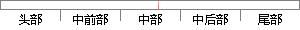

比较适合速度要求高，又要完全容错
片段位置图

相似结果
相似片段：
盘上。当RAID5的一个磁盘数据发生损坏后，利用剩下的数据和相应的奇偶校验信息去恢复被损坏的数据。相当于raid0和raid1的综合。 raid10就是raid1+raid0，比较适合速度要求高，又要完全容错，当然￥也很多的时候。最少需要4块硬盘（注意：做raid10时要先作RAID1，再把数个RAID1做成RAID0，这样比先做raid0，再做raid1有更高的可靠性） 伊拉克
| 对比库： | WriteCheck云资源库 |
| 来源： | guhuodewu.zhaou.com.cn 查看来源 |
| 发布时间： | 2011-05-19 |
| 相似率 | 100% （严重抄袭） |